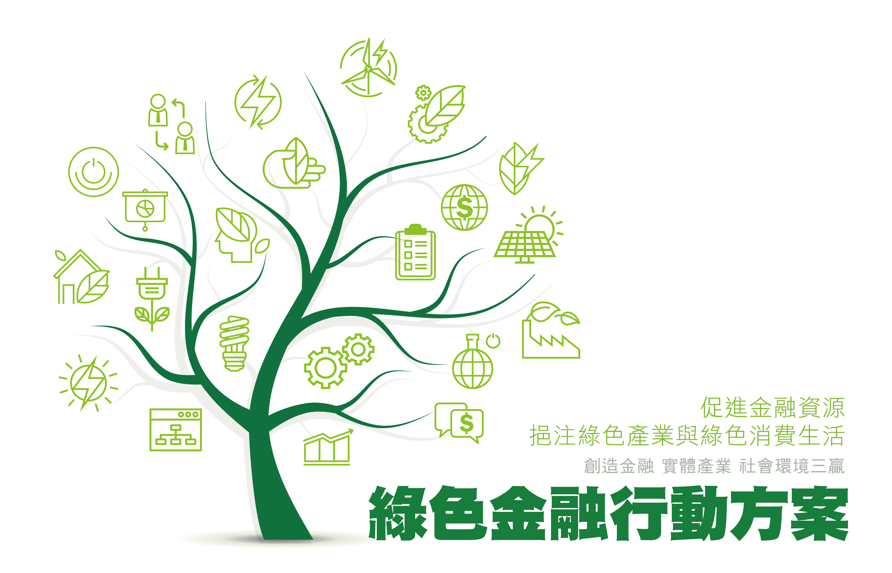

文: 李奕慧/國家再生能源憑證中心
永續發展是目前國際關注且重視之議題，而透過金融市場力量來推動永續發展更是蔚為風潮，因此行政院在106年11月6日核定通過的「綠色金融行動方案」為我國目前金融發展政策之核心，希望建立國內有利發展綠色經濟之環境，以協助綠能產業發展並朝向能源轉型之路邁進，而綠色金融政策中，金融機構除了是關鍵角色，更是憑證市場的隱形推手。
資料來源: 行政院官網
早期再生能源業者通常得在取得買家收入後，銀行才開始融資，近年，在政府的推動下，有越來越多的金融機構開始逐步放寬企業融資條件，轉為在再生能源設備建置期間即可提供融資，滿足業者實際資金調度上的需求，為因應企業設置再生能源設備之資金需求，以下小編為大家收集的銀行綠能貸款相關資訊，詳情請依各家銀行網站資訊為主。
| 融資銀行名稱 | 專案名稱 | 連絡電話 |
| 永豐銀行 | 太陽光電設備貸款 | 洽詢各家分行詢問 |
| 玉山銀行 | 陽光屋頂專案融資 | 洽詢各家分行詢問 |
| 兆豐銀行 | 綠能產業貸款 | 洽詢各家分行詢問 |
| 國泰世華銀行 | 新創重點產業融資 | 洽詢各家分行詢問 |
| 富邦銀行 | 綠能節能設備專案貸款 | (02)87516665 #5 |
| 台灣企銀 | 綠能永續專案貸款 | 02-2559-7171 |
| 彰化銀行 | 太陽光電設備設置專案貸款 | (02)25362951 #2122 |
資料來源：各家銀行綠能貸款資訊頁面
綠色金融不僅受益於再生能源發電業者，以用電大戶為例，企業若能善用銀行資金，提早建置太陽能發電設備，除了可以售電予台電作為綠電收入，更可提高再生能源使用比率，並維持企業在綠色供應鏈中之競爭力，將使用再生能源從環境保護與企業社會責任的角度，演變成為國家與區域競爭力的核心關鍵。
未來，憑證中心也會積極地透過說明會與諮議會等各種管道和金融機構建立良好的溝通管道，持續讓金融業者了解再生能源產業的發展與樣態，以推動國內綠能發展，另一方面，我們也樂見有越來越多的企業，包含金融業者重視環境、社會及公司治理（ESG）議題，促進多元產業追求永續發展的良性循環，並提升市場的國際競爭力，共同為綠能產業與憑證市場創造雙贏的局面。